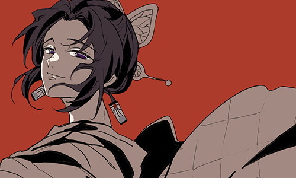
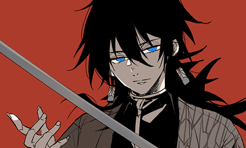
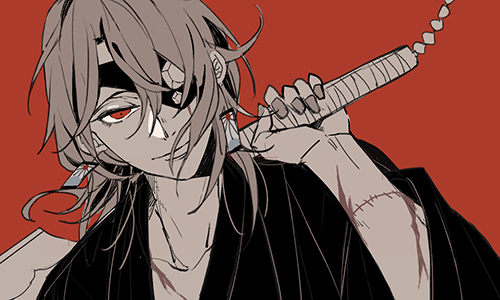
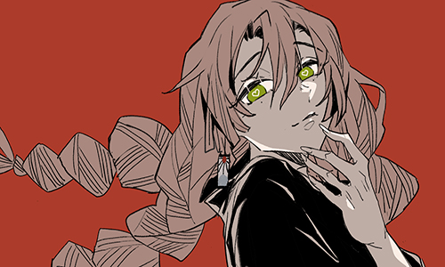
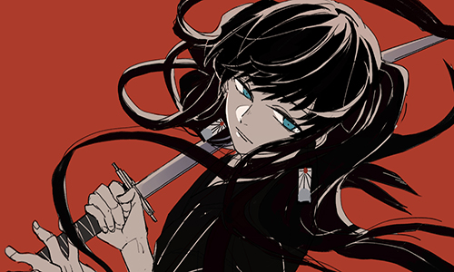
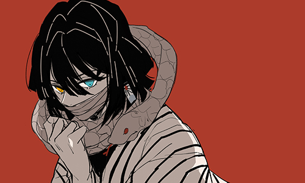
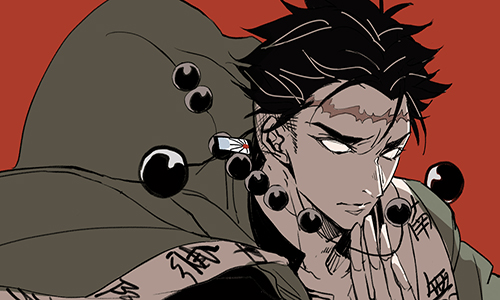
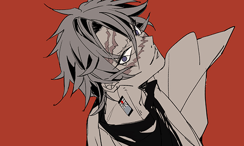

蝴蝶忍（胡蝶 しのぶ/Kochou Shinobu）
吸流派：虫之呼吸虫柱。
脸上总是带着笑容，精通毒理与药学、擅长毒杀鬼的女剑士。鬼杀队治疗设施“蝶屋”的主人，同时担任战斗与治疗的职责，战斗时毫不留情，而且不管在多么麻烦的处境下都能保持冷静的态度应对局势。对病人相当温柔，常调侃一本正经的富冈义勇。希望能继承姐姐的梦想“和鬼和平相处”，但因为敬爱的姐姐被上弦之贰·童磨杀害，所以同时又对加害人的鬼怀抱着深沉的愤怒。那田蜘蛛山任务中想要讨伐身为鬼的祢豆子，被义勇阻止。因柱会议上兄妹二人的表现而认同了他们。肯定炭治郎的努力，把姐姐的梦想寄托在了炭治郎兄妹身上。无限城决战开始后，被童磨击败并吸收，但以自己的牺牲为代价向童磨体内注入等同于自己体重的大量藤花毒。后童磨因为藤花毒发作而实力大减被香奈乎和伊之助斩首。在以灵魂姿态嫌弃了一番即将下地狱的童磨后，灵魂与姐姐和家人团聚。

富冈义勇（冨冈 义勇/Tomioka Giyuu）
呼吸流派：水之呼吸水柱
冷冽的剑士，鳞泷左近次的弟子，炭治郎的师兄。为讨伐变成鬼的祢豆子而出现于炭治郎面前，严厉教训了炭治郎的天真想法并激起他的战斗意志，但由于见证了灶门兄妹的真情，最终认可了兄妹二人的特别之处，放弃杀死祢豆子，并把炭治郎引荐到了鳞泷的门下。在那田蜘蛛山任务中违反队律庇护兄妹二人，与师傅鳞泷一起向当主以性命担保祢豆子不会伤害人类。不苟言笑但相当有人情味。因不善言辞，被忍指出被柱们所讨厌，但本人因没有自觉而否认。过去与锖兔为同期剑士，因被锖兔所救导致锖兔被手鬼杀害而一直万分愧疚而无法释怀。认为自己不配成为水柱也无法觉醒斑纹，打算放弃柱的称号，后因炭治郎的劝阻而敞开了心扉。无限城决战开始后，和炭治郎合力与猗窝座一战，期间觉醒了斑纹。战胜猗窝座后因力竭失去意识，醒来后和炭治郎继续追寻无惨的踪迹。

宇髄天元（宇髄 天元/Uzui Tengen）
呼吸流派：音之呼吸音柱。
原忍者，绰号“二刀流的宇髄天元”。头巾上镶有着许多钻石珍珠的男子，卸妆后意外的十分美型。口头禅是“华丽” ，自称“祭典之神”。身型壮硕，可以利用肌肉强行使心脏停止，暂缓毒素的蔓延，有三个妻子。吉原篇带领主角团潜入花街，最终合力杀死上弦之陆·堕姬和妓夫太郎，但自己也失去了左眼和左手。现已退出了柱，在后台以原柱的名义训练新人成为鬼杀队队员。认可主角团三人为自己优秀的继子。无限城决战开始后，和槙寿郎一同担任新任当主辉利哉的护卫。

甘露寺蜜璃（甘露寺 蜜璃/Kanroji Mitsuri）
呼吸流派：恋之呼吸恋柱。
有着一双浅绿色的大眼睛，时常双颊泛红，眼下有泪痣。留有两条樱粉色的长麻花辫的少女，发梢为草绿色。原先是黑发，但由于连续八个月一天吃170个樱饼所以头发变色了。一岁两个月大的时候就能轻易举起15公斤的腌酱菜石，食量足里胜过三个相扑选手，为找到比自己强的夫君而加入鬼杀队。性格开朗活泼，是主动接纳了炭治郎兄妹的少数柱之一，曾是炎柱的继子。锻刀人之村与半天狗一战后觉醒了斑纹，但因表达能力不佳没人听得懂她的解释。无限城决战开始后，和伊黑小芭内共同对决新任上弦之肆·鸣女。

时透无一郎（时透 无一郎/Tokitou Muichirou）
呼吸流派：霞之呼吸霞柱。
起始呼吸·日之呼吸使用者的子孙，握刀两个月就成为柱的天才。留着黑色长发，面无表情的少年，失忆后总是在发呆，对于无关紧要的事情很快就会忘记，但会对扰乱当主的无礼之人予以制裁。缺乏情感，待人冷漠，但这是失去记忆的后遗症。后因炭治郎而恢复记忆并发生改变。玉壶一战后觉醒斑纹，并将产生斑纹的诀窍告知其他柱。无限城决战开始后，遭遇上弦之壹·黑死牟，被其用刀砍断左手，钉在柱子上无法行动。在脱离束缚后，觉醒了通透世界，并以舍命一击的方式刺穿了黑死牟，为鬼化后的玄弥争取了宝贵的机会。虽然被黑死牟腰斩，但临死前刺穿黑死牟的日轮刀变为了“赫刀”限制住了黑死牟，以此帮助行冥成功斩首了黑死牟，并成为了在其突破限界再生之后使其身躯开始崩坏并无法再生的关键，最终帮助实弥和行冥彻底消灭了黑死牟，但自己也由于失血过多而身亡。

伊黑小芭内（伊黒 小芭内/Iguro Obanai）
呼吸流派：蛇之呼吸蛇柱。
生来便拥有右金左绿的瞳眸，绷带缠脸，黑色的中长发如同海带一般。身披条纹羽织，脖子上缠绕着一条名为镝丸的雄性白蛇。和食量大的甘露蜜璃不同，他可以三天不吃不喝都没问题。暗恋着甘露寺蜜璃，曾送给蜜璃一双袜子。在柱众审判中，压制住想要救下祢豆子的灶门炭治郎，被富冈义勇阻止。无限城决战开始后，和甘露寺蜜璃共同对决新任上弦之肆·鸣女。

悲鸣屿行冥（悲鸣屿 行冥/Himejima Kyoumei）
呼吸流派：岩之呼吸岩柱。
最强的柱。僧侣风格的巨汉，时常泪流满面，额头上有一条极长的伤痕，双眼全盲，鬼杀队制服里披着写有“南无阿弥陀佛”字样的棕色羽织。实力是鬼杀队中最强的，仅仅是甩动手上的佛珠就能够震撼周围的人，但被徒弟玄弥指出不擅长教导别人。在柱众审判中，主张杀死祢豆子，后在柱指导训练中因炭治郎的坦诚和诚实而认同炭治郎并决定相信并帮助炭治郎到最后。无限城决战开始后，从黑死牟手下救下实弥，并为了打败黑死牟而解放斑纹，并在之后的苦战中意外开启了通透世界。在此后反过来压制了黑死牟，并最终在不死川兄弟和无一郎的配合下成功将其斩首，并在其突破限界再生之后同实弥一道将其身躯彻底摧毁。

不死川实弥（不死川 実弥/Shinazugawa Sanemi）
呼吸流派：风之呼吸风柱。
玄弥的哥哥，留着银白色刺猬头，身上有着许多伤痕。性格粗暴，极度不认同人鬼共存。幼时十分爱护玄弥，但后来为了让弟弟远离危险而故意疏远玄弥，在玄弥加入鬼杀队后甚至宣布与其直接断绝关系，并不断地计划将其赶出鬼杀队。柱众审判中，不相信祢豆子不会吃人，并以血试炼。在柱指导训练中，因玄弥的事与炭治郎大打出手。无限城决战开始后，原本只是一直清理跑来袭击的鬼，在玄弥险些被黑死牟斩首时现身将其救下，并向其表明了自己的本意。最初想要用自己的稀血来对付黑死牟，但却作用不大，在险些被黑死牟杀死之际被行冥救下，在包扎好伤口后重新加入战斗，与黑死牟死战几回合后觉醒了斑纹，同时其关键时刻的补刀帮助行冥成功斩首了黑死牟。随后在黑死牟完成了再生时，由于玄弥和无一郎被黑死牟重创，怀着悲愤的心情不断朝黑死牟攻击，最终成功将其身躯彻底摧毁